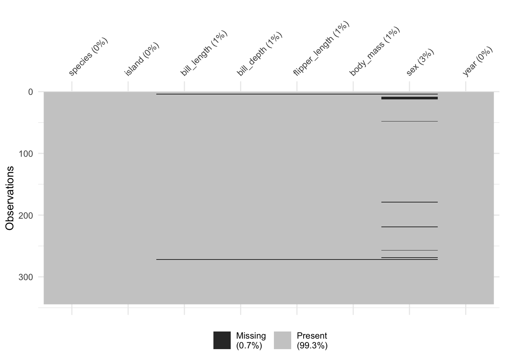
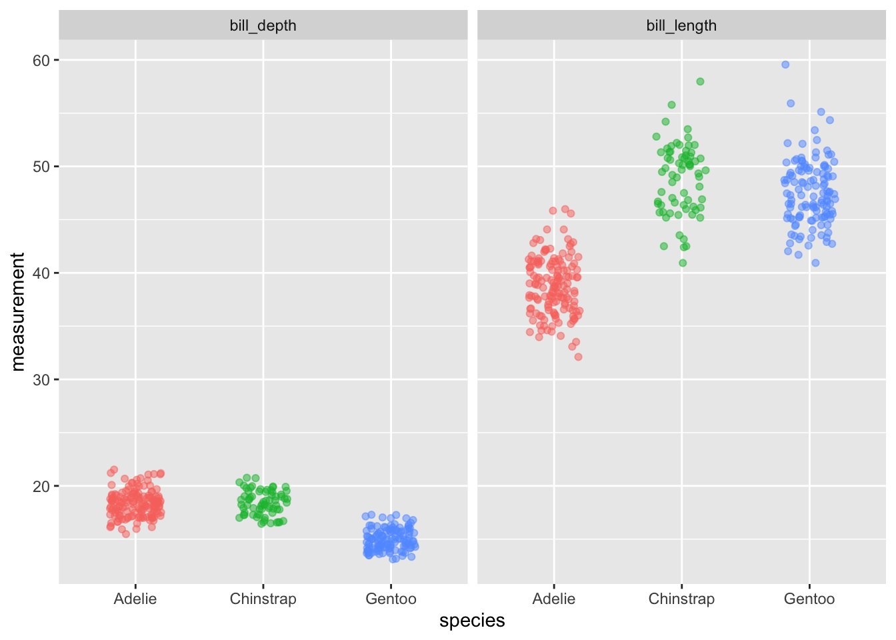
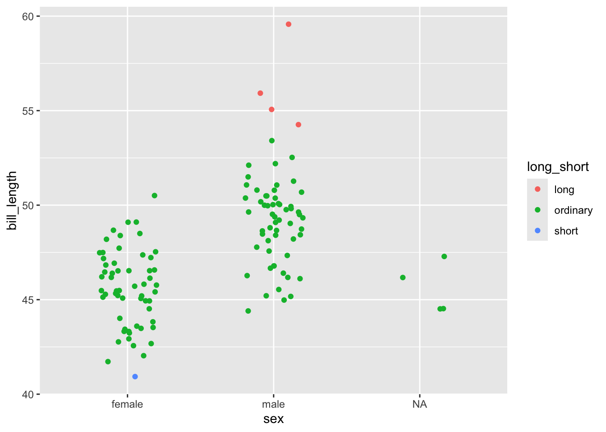
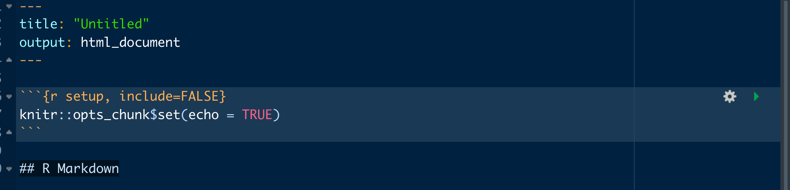
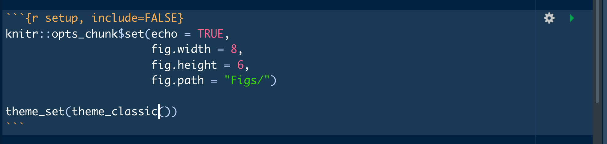

library(tidyverse)
library(here)
library(janitor)
library(lubridate)
library(ggeasy)
library(palmerpenguins)
library(naniar)
library(gt)my favourite things about R
I am prepping a talk for R-Ladies Sydney about my favourite R things, including the packages and functions that end up in every script I write.
Avoid filepath drama
here::here()
The here package makes dealing with file paths and telling R where your work lives really easy. If you work within a R project (always recommended), here::here() defaults to the top level of your project folder. You can refer to everything relative to there and use quotes to specify folder levels. Today I am writing in my website project, so here tells me that I am currently…
here::here()[1] "/Users/jenrichmond/Dropbox/ALL_R_stuff/2. WEBSITES/jenrichmond.github.io"When I want to read in some data, I can refer to the location of that data relative to this starting point. In my blogdown site, I’ve put the data in the folder for this particular post (within content/blog/). The nice thing about referring to the location of things relative to the top level of your project, is that it doesn’t matter if you are working in Rmd or R script, on the computer that you wrote the code on or another one, the path doesn’t change.
practice_penguins <- read_csv(here("posts", "2022-01-17-my-favourite-things-about-r", "practice_penguins.csv"))Fix variable names
janitor::clean_names()
I messed up the penguin data to make the variable names a bit ugly so I could demo my favourite function, clean_names(). So often little thought is put into naming conventions at the time of data entry and it is really common to be given a dataset that has really longwinded and inconsistently formatted variable names.
names(practice_penguins)[1] "Species" "island" "Bill length" "bill_depth"
[5] "flipper length" "Body_Mass" "Sex" "year" In this case there is a mix of upper and lower case, some gaps between words, some underscores. When you are coding, you need to type the names of variables a lot, so it can save you lots of time to make the variable names consistent… enter clean_names()
clean_penguins <- practice_penguins %>%
clean_names()
names(clean_penguins)[1] "species" "island" "bill_length" "bill_depth"
[5] "flipper_length" "body_mass" "sex" "year" In one line of code, everything is lower case with underscores in the gaps (aka snake case).
Count things
janitor::tabyl()
Often the first thing you want to do in R is count how many observations you have of different type. The tabyl() function from janitor works much like the count() function, but the output is more concise and user friendly and includes percentages automatically.
clean_penguins %>%
tabyl(species) species n percent
Adelie 152 0.4418605
Chinstrap 68 0.1976744
Gentoo 124 0.3604651You can count just one variable, or get something a bit like a cross tab with two. There are a series of adorn_ functions that also allow you to add totals.
clean_penguins %>%
tabyl(species, sex) %>%
adorn_totals() species female male NA_
Adelie 73 73 6
Chinstrap 34 34 0
Gentoo 58 61 5
Total 165 168 11You can assign the output to a dataframe or pipe into gt() to get a nice looking rendered output.
clean_penguins %>%
tabyl(species, sex) %>%
adorn_totals() %>%
gt()| species | female | male | NA_ |
|---|---|---|---|
| Adelie | 73 | 73 | 6 |
| Chinstrap | 34 | 34 | 0 |
| Gentoo | 58 | 61 | 5 |
| Total | 165 | 168 | 11 |
Find missing values
naniar::vis_miss
Sometimes you know there is missing data but it can be difficult to know where it is or what to do about it. The vis_miss() function from the naniar` package helps you see where the missing values are so you can better decide what to do with them.
naniar::vis_miss(clean_penguins)
Make wide data long
tidyr::pivot_longer()
When we enter data it is usually in wide format. This is problematic when you want to use ggplot, which expects your data to be long. The new pivot functions from tidyr make it really easy to switch your data from wide to long (and back again if you need). Here I am selecting just species and the two variables that start with “bill” to make a smaller demo dataset.
penguin_bill <- clean_penguins %>%
select(species, starts_with("bill"))
glimpse(penguin_bill)Rows: 344
Columns: 3
$ species <chr> "Adelie", "Adelie", "Adelie", "Adelie", "Adelie", "Adelie"…
$ bill_length <dbl> 39.1, 39.5, 40.3, NA, 36.7, 39.3, 38.9, 39.2, 34.1, 42.0, …
$ bill_depth <dbl> 18.7, 17.4, 18.0, NA, 19.3, 20.6, 17.8, 19.6, 18.1, 20.2, …Technically this bill data is in wide format (it is not the best example but lets run with it). The two columns contain bill measurements, about two different parts of the penguin bill. We could represent this data in long format by making a new column that contained info about which part of the bill we were measuring, and another column with the measurement value.
The pivot_longer() function asks you to specify what you want to call the column that will contain what is currently in the variable names (i.e. names_to), what you want to call the column that will contain the values (i.e. values to) and the range of columns that are currently wide that you want to be long.
long_bill <- penguin_bill %>%
pivot_longer(names_to = "bill_part",
values_to = "measurement", bill_length:bill_depth)
head(long_bill)# A tibble: 6 × 3
species bill_part measurement
<chr> <chr> <dbl>
1 Adelie bill_length 39.1
2 Adelie bill_depth 18.7
3 Adelie bill_length 39.5
4 Adelie bill_depth 17.4
5 Adelie bill_length 40.3
6 Adelie bill_depth 18 Make ggplot easy
ggeasy::easy_remove_legend()
Once you have your head around how to construct figures in ggplot, you can spend a lot of time googling how to customise it. The ggeasy package contains a whole lot of easy to use wrappers for really common ggplot adjustments. Like removing the legend…the code to remove the legend is p + theme(legend.position = "none") … or you can use ggeasy::easy_remove_legend()
long_bill %>%
ggplot(aes(x = species, y = measurement, colour = species)) +
geom_jitter(width = 0.2, alpha = 0.5) +
facet_wrap(~ bill_part) +
easy_remove_legend()
Make new conditional variables
dplyr::case_when()
Sometimes you need to compute a new variable based on values in other variables, case_when() is your friend. Lets say we were interested in which penguins have extremely long or short bills. Here I am filtering for just the Gentoo penguins, and calculating the mean and sd for bill length. Then I am using mutate() to make a new variable and case_when() to flag values of bill length than are more than 2sd greater than the mean as “long” and values of bill length that are more than 2sd below the mean as short. The TRUE ~ “ordinary”, puts ordinary in the cells that don’t meet those criteria.
Then we can use tabyl() to count how many penguins have extraordinarily long or short bills.
gentoo <- clean_penguins %>%
filter(species == "Gentoo") %>%
select(species, bill_length, sex)
mean_length <- mean(gentoo$bill_length, na.rm = TRUE)
sd_length <- sd(gentoo$bill_length, na.rm = TRUE)
gentoo <- gentoo %>%
mutate(long_short = case_when(bill_length > mean_length + 2*sd_length ~ "long",
bill_length < mean_length - 2*sd_length ~ "short",
TRUE ~ "ordinary"))
gentoo %>% tabyl(long_short) long_short n percent
long 4 0.032258065
ordinary 119 0.959677419
short 1 0.008064516Move new variables
dplyr::relocate()
When using mutate() to make a new variable, the default is to add it to the right side of the dataframe. With small datasets that is ok, but when you have lots of variables and you want to check whether the mutate has done what you want, it can be annoying. There is a relatively new function in dplyr that allows you to relocate a variable. Here I am moving the long_short variable we just made to the position after bill_length.
gentoo <- gentoo %>%
relocate(long_short, .after = bill_length)
glimpse(gentoo)Rows: 124
Columns: 4
$ species <chr> "Gentoo", "Gentoo", "Gentoo", "Gentoo", "Gentoo", "Gentoo"…
$ bill_length <dbl> 46.1, 50.0, 48.7, 50.0, 47.6, 46.5, 45.4, 46.7, 43.3, 46.8…
$ long_short <chr> "ordinary", "ordinary", "ordinary", "ordinary", "ordinary"…
$ sex <chr> "female", "male", "female", "male", "male", "female", "fem…Lets make a plot to illustrate the variability in Gentoo penguins bill length.
gentoo %>%
ggplot(aes(x = sex, y = bill_length, colour = long_short)) +
geom_jitter(width = 0.2)
Save all Rmd figures to folder
knitr options fig.path =
You might have noticed that in the default Rmd template there is a chunk at the top that controls how your document knits. The default knit settings have echo = TRUE which makes your code appear in your knitted document along with your output. But you can add other knit settings.

You can add fig.width, fig.height, and fig.path to control how big your plots appear in your knitted document. You can also add fig.path to have your plots be rendered in png format to a folder within your project. And if you want all the ggplots in your document to be the same theme, you can add that as a default.

Write new data to csv
readr::write_csv()
My data analysis process often involves reading in raw data, cleaning it up, and then writing it out to csv so that you can read the clean data in to another process (visualisation, modelling). I use write_csv() and here::here() to write out a csv that can then be used in a different script.
gentoo %>%
write_csv("clean_gentoo.csv")